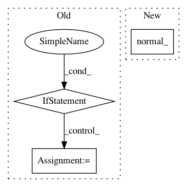

f7a1a77baf9102cbd20971c8edba71c4adad33d6,gpytorch/__init__.py,,monte_carlo_log_likelihood,#Any#Any#Any#Any#Any#,106
Before Change
def monte_carlo_log_likelihood(log_probability_func, train_y,
variational_mean, chol_var_covar,
train_covar):
if isinstance(train_covar, LazyVariable):
log_likelihood = train_covar.monte_carlo_log_likelihood(log_probability_func,
train_y,
variational_mean,
chol_var_covar)
else:
epsilon = Variable(train_covar.data.new(len(train_covar), num_trace_samples).normal_())
samples = chol_var_covar.t().mm(epsilon)
samples = samples + variational_mean.unsqueeze(1)
log_likelihood = log_probability_func(samples, train_y)
return log_likelihood
def mvn_kl_divergence(mean_1, chol_covar_1, mean_2, covar_2):
After Change
Args:
- covar (matrix nxn) - Variable or LazyVariable representing the covariance matrix of the observations.
Usually, this is K + s*I, where s is the noise variance, and K is the prior covariance.
- target (vector n) - Training label vector.
Returns:
- scalar - The marginal log likelihood of the data.
In pattern: SUPERPATTERN
Frequency: 3
Non-data size: 3
Instances
Project Name: cornellius-gp/gpytorch
Commit Name: f7a1a77baf9102cbd20971c8edba71c4adad33d6
Time: 2017-11-05
Author: gpleiss@gmail.com
File Name: gpytorch/__init__.py
Class Name:
Method Name: monte_carlo_log_likelihood
Project Name: facebookresearch/ParlAI
Commit Name: 548c67bbe7598c3221b83cf6ef216b848debac2c
Time: 2018-11-15
Author: roller@fb.com
File Name: parlai/agents/seq2seq/modules.py
Class Name: OutputLayer
Method Name: __init__
Project Name: pyprob/pyprob
Commit Name: 48f07c6d57ea9f3f1ecb948846ada0e1c75a6627
Time: 2018-04-05
Author: atilimgunes.baydin@gmail.com
File Name: pyprob/nn.py
Class Name: InferenceNetwork
Method Name: _add_address